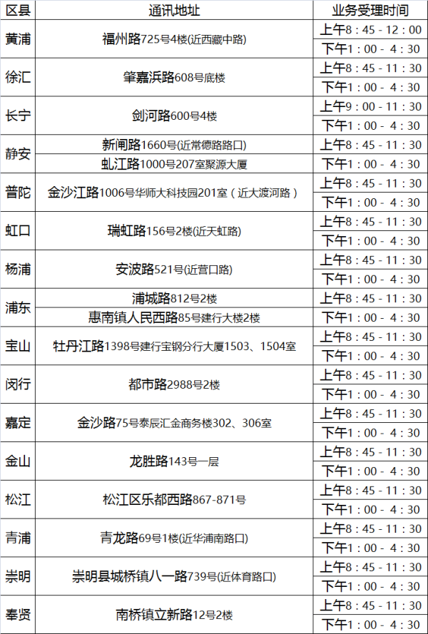

上海公积金提取指南
适用范围
- 工作满3个月（连续缴纳了3个月的住房公积金）
- 你和你配偶（如果有）在上海名下没有自住用房（不包括商业办公用房）
- 目前没有公积金贷款
- 在上海租房（非公租房、廉租房）
- 你短期不打算在上海买房，因为如果取了太多出来交房租，之后可能会影响公积金贷款额度。
准备材料
- 身份证 + 复印件
- 如有共同提取人，需提供这个人的身份证件，书面证明，书面同意书等。
- 你名下的上海的银行借记卡
- 现场填写申请表格,也可以网上下载打印填写好带过去.
- 不需要租房合同也可以(有的话最好备着,以防万一)
- 如果是已婚需要提供结婚证原件及复印件(其实是已婚,你填写未婚也是可以审核通过的,亲自尝试过.)
办理流程
- 进门取号等待(类似银行会有保安教你)
- 填写资料
- 叫到号把填写的资料上交,还有身份证,银行卡等复印件
注意事项
- 提取公积金,一次申请一年期,一季度打一次钱,上限2000,所以你填写资料的房租填2000以上,这样你每季度都可以拿到6000块,一般月下旬二十多号接近月底打钱到卡上.本人之前卡上有三万多块钱.可以提取四个季度,不能直接一次性提取两年或者全额.如果只有一万多,就只能提取两个季度.
办理地点
上海公积金各个区提取地点-官网查询
